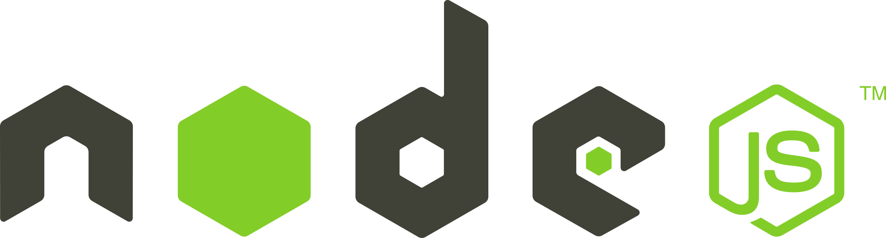

About Me
Hello, I'm Marcus Olsson, a 27 years old, originally from Värmland and now living in Växjö, I am pursuing a degree in Systemvetenskap at Linnéuniversitetet. Before i started my studies, I gained valuable work experience in sales and customer support, working for companies like Telenor and Telia, where I handled customer inquiries related to subscription cancellations. I've also worked in a sports store, managing the shoe section. Over the course of my studies, I have developed a strong foundation in information systems, system development, and IT security, thanks to a diverse curriculum that spans topics such as organizational systems, business process modeling, object-oriented programming, and IT security. In my first year, I acquired essential skills in business modeling, database management, and data analytics, while deepening my programming knowledge in both foundational and object-oriented techniques. As I entered my second year, I expanded my expertise into more advanced topics such as problem structuring, project methodology, and quality assurance in information systems. I also gained hands-on experience developing web-based applications and refining my understanding of scientific methods in the context of informatics research. My passion lies in system design and system development, with a keen focus on the role of a business analyst. Additionally, I am deeply interested in information and cybersecurity, aspiring to build a career in either of these areas upon completing my studies. With a holistic understanding of IT systems and their intersection with business, I look forward to contributing to innovative and secure digital solutions.
Skills
Skill level, HTML
On a scale of 1-5, I'm a 4
Skill level, CSS
On a scale of 1-5, I'm a 2,5
Skill level, JavaScript
On a scale of 1-5, I'm a 2
Skill level, TypeScript
On a scale of 1-5, I'm a 2,5
Skill level, Angular
On a scale of 1-5, I'm a 2
Skill level, Java
On a scale of 1-5, I'm a 3,5
Skill level, node.js
On a scale of 1-5, I'm a 2
Skill level, MySQL
On a scale of 1-5, I'm a 4,5
Skill level, Log4J
On a scale of 1-5, I'm a 2
Skill level, JUnit
On a scale of 1-5, I'm a 2

Skill level, Mockito
On a scale of 1-5, I'm a 2
Skill level, Tableau
On a scale of 1-5, I'm a 4